Propulsion / Research, 2024–Present
Hydrogen Turbofan Combustor
As propulsion team lead of Penn Jet Propulsion, I direct a team research project on hydrogen combustion through micromixing. Together we design and analyze the combustor, fuel manifold, and ignition system from first principles.
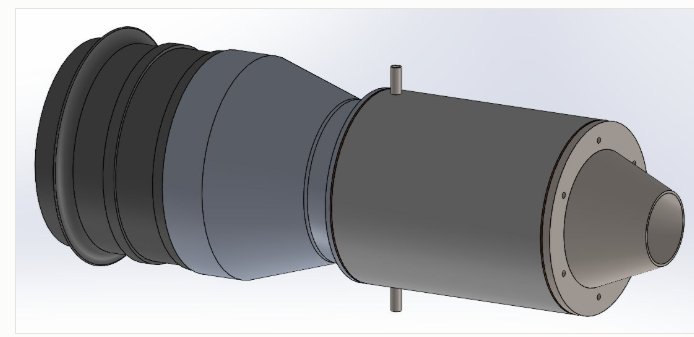
The problem
Hydrogen's high flame temperature and wide flammability limits make it attractive for clean combustion but difficult to manage in compact hardware. The project's approach is micromixing: distributing fuel injection across many small jets to achieve stable, well-mixed combustion within the liner's material limits, using analysis-driven design rather than trial and error.
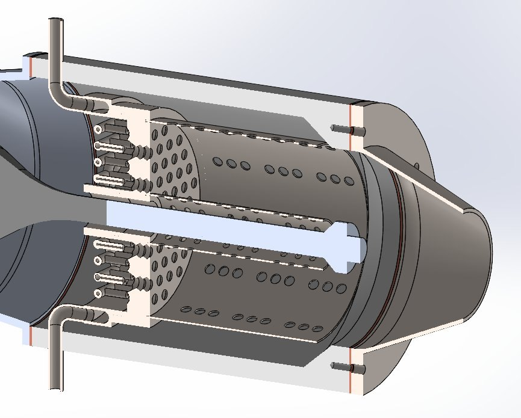
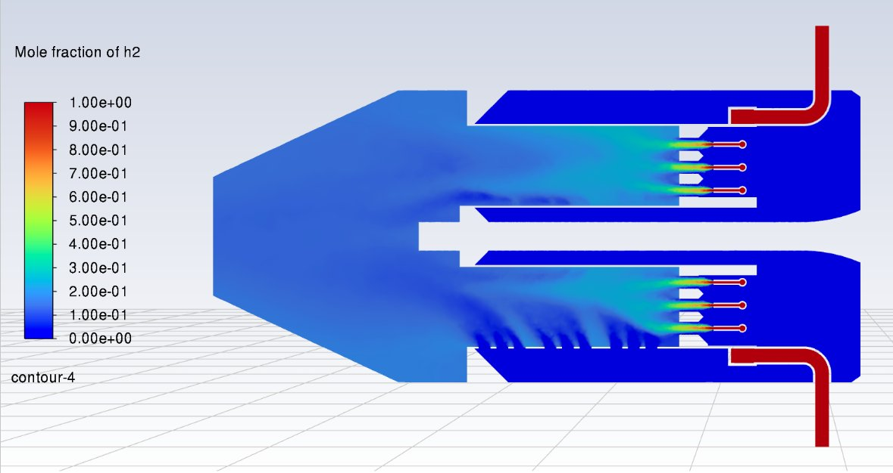
Analysis campaign
We built a CFD and FEA workflow around the combustor. Species-transport simulations map hydrogen mole fraction through the injector array to evaluate mixing quality and recirculation zones. Turbulent kinetic energy fields characterize the shear layers coming off each injector tube, which drive flame anchoring. Combustor-exit temperature contours, peaking above 2,100 K locally, size the dilution scheme and set liner material limits, and pressure-field results validate the loss budget across the flame tube.
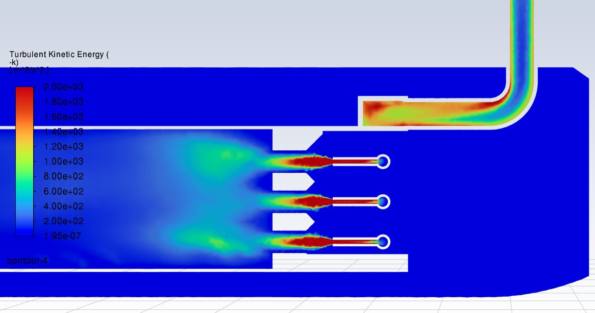
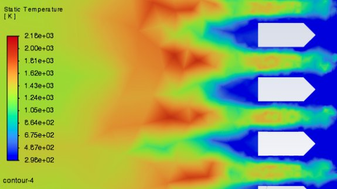
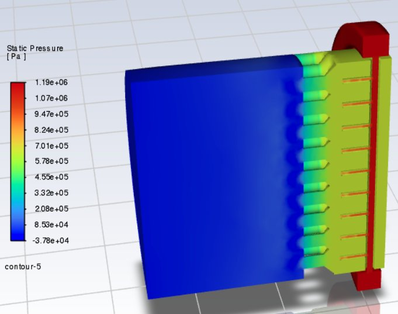
Fuel delivery and structure
The fuel delivery side gets the same treatment: manifold simulations resolve pressure and temperature distribution across the ring-and-stem injector network to verify uniform feed to every injection point. On the structural side, thermal-stress FEA of the 304 stainless liner closes the loop between gas-side temperatures and mechanical margin.
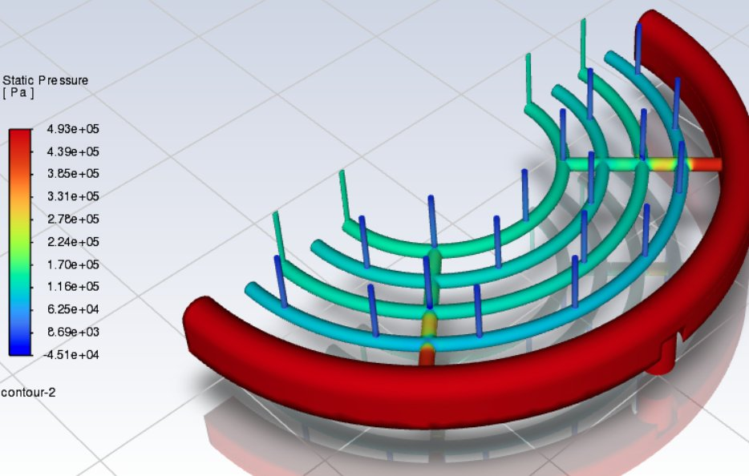
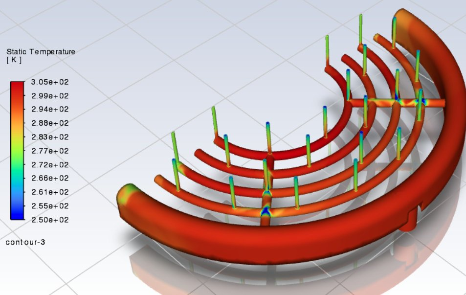
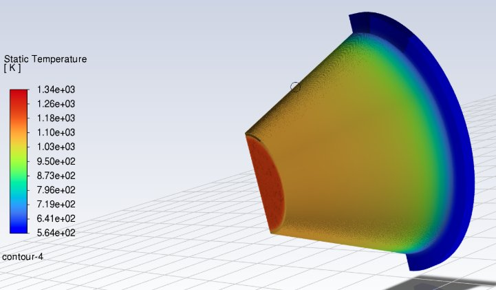
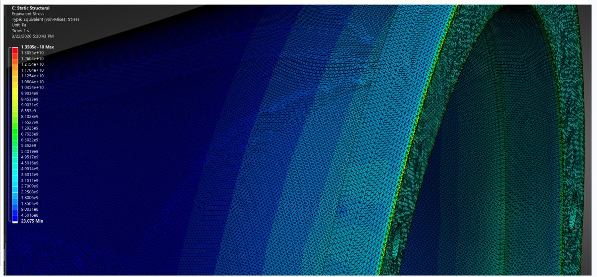
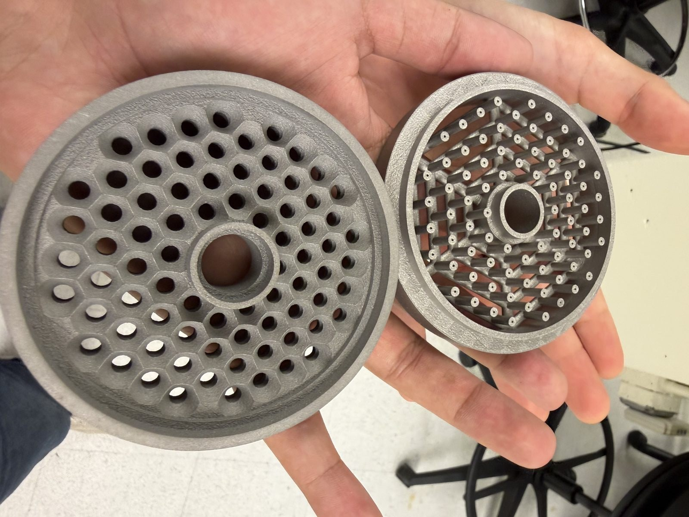
Hardware
The analysis feeds the demonstrator hardware: a 304 SS combustion liner and a custom ignition circuit, packaged into a turbofan architecture with the combustor at its core. At the head of the liner, a micromixer injector built from two perforated plates splits the hydrogen into many small jets, putting the micromixing approach into hardware. The engine is built but has not yet been tested. The goal is a hydrogen demonstrator that undergraduates designed, analyzed, and built end to end, with the first test campaign ahead.